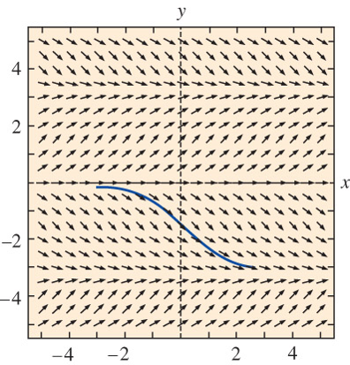
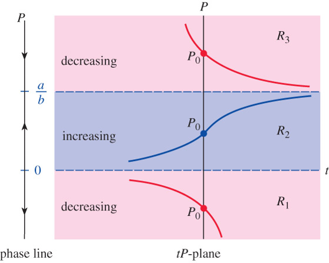

DEs can be analyzed qualitatively, allowing us to approximate a solution curve without solving the problem
Two approaches are:
Direction fields
Autonomous first-order DEs
Direction fields:
Slope of the lineal element at \((x,y(x))\) on a solution curve is the value of \(\,\frac{dy}{dx}\,\) at this point
Direction/slope fields of \(\,\frac{dy}{dx}=f(x,y)\,\) are collections of lineal slope elements that visually suggest the shape of a family of solution curves
For example, \(~\displaystyle\frac{dy}{dx}=\sin y\)

Using the given computer-generated direction field, sketch, by hand, an approximate solution curve that passes through each of the indicated points:
Critical points, \(~f(c)=0\), \(~\) are constant (or equilibrium) solutions of autonomous DEs
A phase portrait is made by putting critical points on a vertical line with phase lines pointing up or down, depending on the sign of the function over intervals between the points
Some conclusions can be drawn about nonconstant solution curves to autonomous DEs
If a solution \(y(x)\) passes through \((x_0,y_0)\) in sub-region \(R_i\), \(~\)then \(y(x)\) remains in \(R_i\)
By continuity, \(~f(y)\) cannot change signs in a sub-region \(R_i\)
Since \(f(y)\) is either positive or negative in \(R_i\), \(~\)a solution is either increasing or decreasing and has no relative extremum
Example:\(\,\) Phase portrait and solution curves
\[ \displaystyle \frac{dP}{dt} = P(a-bP) \]

Example:\(\,\) Consider the autonomous first-order differential equation
\[\frac{dy}{dx}=y^2-y^4\]
and the initial condition \(y(0)=y_0\). Sketch the graph of a typical solution \(y(x)\) when \(y_0\) has the given values
A first-order DE of the form \(\displaystyle a_1(x) \frac{dy}{dx} +a_0(x)y = g(x)~\) is a linear equation in the dependent variable \(y\)
The DE is homogeneous when \(g(x)=0\) ; \(~\)otherwise, \(~\)it is nonhomogeneous
The standard form of a linear DE is obtained by dividing both sides by the lead coefficient
\[\color{red}{\frac{dy}{dx}+P(x)y=f(x)}\]
The standard form equation has the property that its solution \(y\) is the sum of the solution of the associated homogeneous equation \(y_h\) and the particular solution of the nonhomogeneous equation \(y_p\) :
\[\color{red}{y=y_h +y_p}\]
The homogeneous equation \(\displaystyle\frac{dy_h}{dx} +P(x)y_h= 0~\) is separable, allowing us to solve for \(y_h\)
A differential expression \(~M(x,y)dx + N(x,y)dy~\) is an exact differential in a region \(R\) of the \(xy\)-plane if it corresponds to the differential of some function \(f(x,y)\):